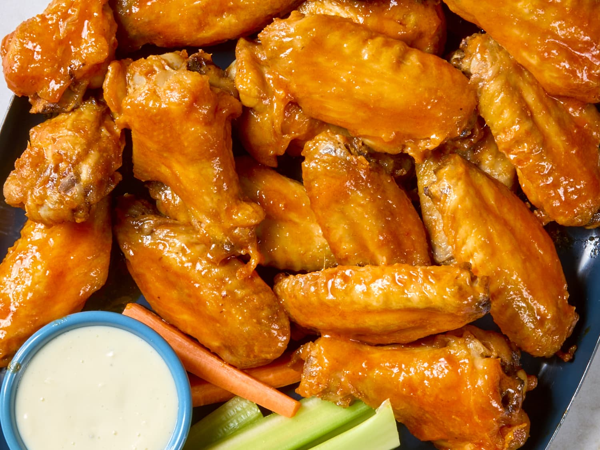

Chicken Wings

Chicken wings with a side of dip and veggies
No grill? No problem. Baked chicken wings come together easily with just an oven and a few ingredients.
Ingredients
- 3 tablespoons olive oil
- 3 cloves garlic, pressed
- 2 teaspoons chili powder
- 1 teaspoon garlic powder
- salt and ground black pepper to taste
- 10 chicken wings
Steps
- Gather the ingredients. Preheat the oven to 375 degrees F (190 degrees C).
- Combine olive oil, garlic, chili powder, garlic powder, salt, and pepper in a large, resealable bag; seal and shake to combine. Add chicken wings; reseal and shake to coat. Arrange chicken wings on a baking sheet.
- Cook chicken wings in the preheated oven until crisp and cooked through, about 30 to 45 minutes.
- Serve hot and enjoy!